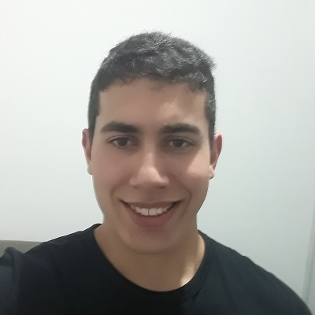

- Home
- >
- Sobre Mim
Sobre Mim
Dados Pessoais

Nome:
Guilherme Vilas Boas Ferreira da Silva
Data de Nascimento:
02/05/2000
Residência:
Itajubá, Minas Gerais, Brasil
Idiomas:
Português (Nativo)
Inglês
Espanhol
Habilidades
Comecei a tocar baixo eletrônico aos 12 anos, meus colegas de escola e eu tínhamos uma banda e, a partir daí, nunca mais parei de fazer música. Me profissionalizei aos 18 anos, em 2018, através do lançamento do meu primeiro álbum "Dream Night". Não é tão importante para mim definir o tipo de música que eu faço, geralmente os jornalistas se preocupam com isso. Mas quando perguntam, geralmente digo que é principalmente House com variações.
Os estilos pelos quais tenho mais experiência e familiaridade são House, Techno e Trance. Acho importante não ter apenas um estilo fixo, mas sim flutuar por todas as opções, adquirindo o que há de melhor em cada um e sempre adicionando algo de novo dentro da época e situação. Atuamente, estou focando em House, mais especificadamente em Deep e Tropical House.
O processo de criação da música segue de uma rígida rotina de trabalho, com os softwares mais otimizados e potentes do mercado, dentre o qual mais utilizo é o Logic Pro que considero ser o melhor. Já participei de parcerias na criação de hits com diversos grandes DJ's do mercado como Zerb e Cat Dealears e possuo experiência em apresentações em festivais de médio-grande porte.
Experiência de Trabalho
Festivais:
Festival Universo Paralello (2019), BH Dance Festival (2020), Carnavibe (2020), Shiva Ohm- A Natureza Mística (2019), Rio Music Carnival (2020), AME Laroc Festival (2018), Tribe (2018), MELT-Sul de Minas (2018,2019,2020) como headliner, Afterlife (2019), Warung Day Festival (2019).
Álbuns:
RECORD COLLECTION(2020), BLACK & WHITE(2019), ART(2019), THE FREQUENCY(2018), DREAM NIGHT(2018)
Descrição
Um sonhador que ousou sonhar. Minha música é minha vida. Meu maior objetivo é levar as pessoas ao melhor momento da vida delas de beat a beat. Quando eu controlo o ritmo e a vibração da música, sinto que uno todos que estão na pista, em uma só frequência. Em um mundo tão depremido, quanto melhor a batida melhor será a reação.
A música pode mudar as pessoas, e a forma que encontrei para participar desta revolução de felicidade foi ser DJ. A cada festa, a cada rave, eu me sinto mais próximo do Nirvana. Mas não só eu, o todo. A multidão que pula e festeja, todos se juntam e se conectam em nome da música.
Cada música que produzo tem um significado especial, pois nela está um pedaço de mim e também da humanidade. Algumas pessoas ressoam com o que eu faço e se conectam comigo emocionalmente, e com isso estou satisfeito. O que me interessa quando toco ao vivo é que as pessoas dançam, porque acredito que a dança é uma das expressões humanas mais saudáveis e libertadoras.
Contato
guifdasilva@yahoo.com.br
35 999415500
← Voltar ao início